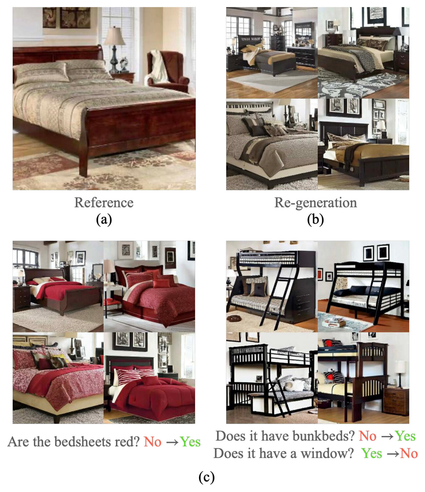
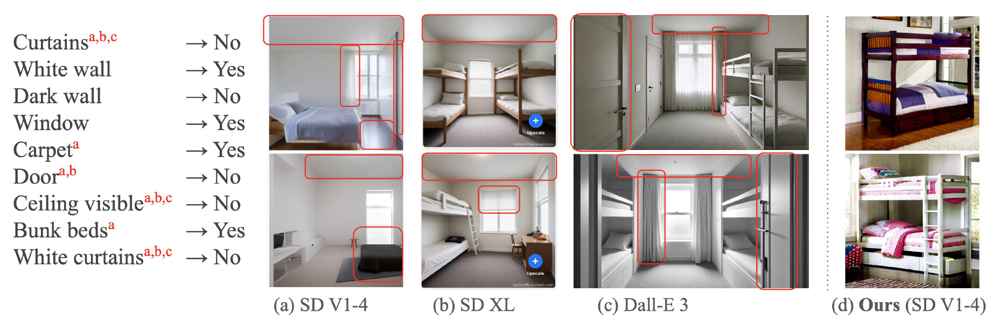
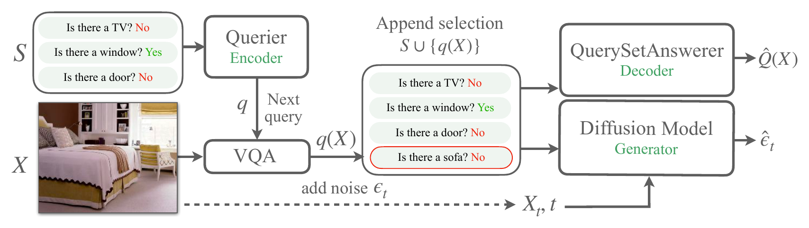
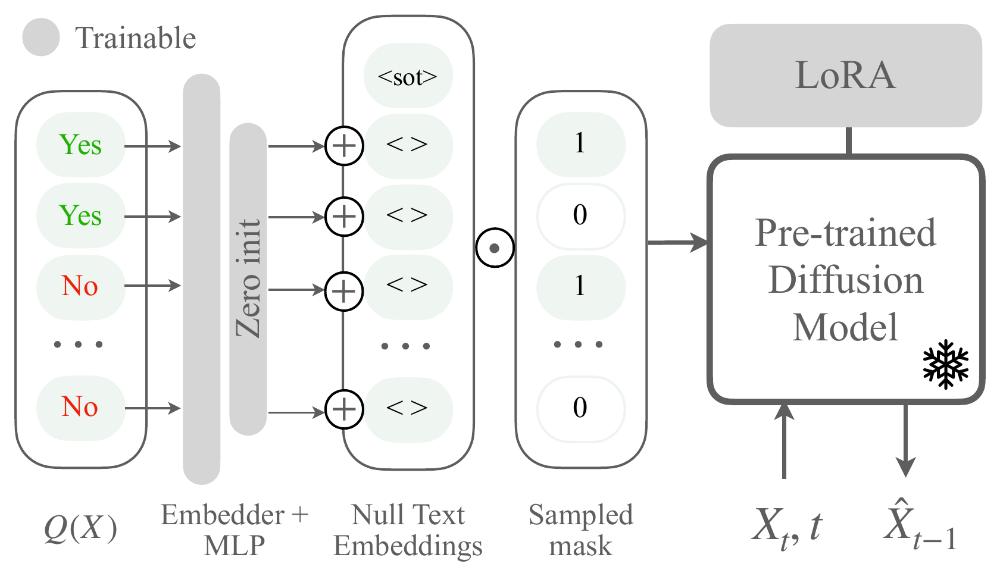
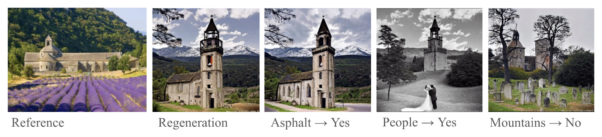
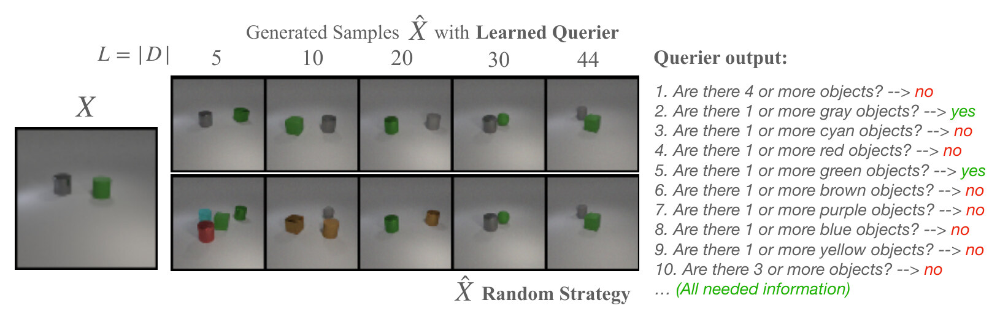
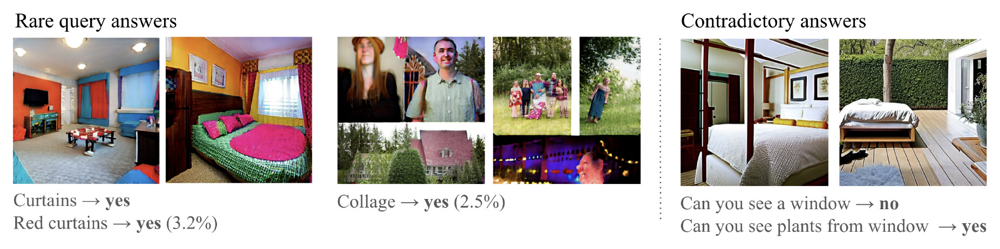
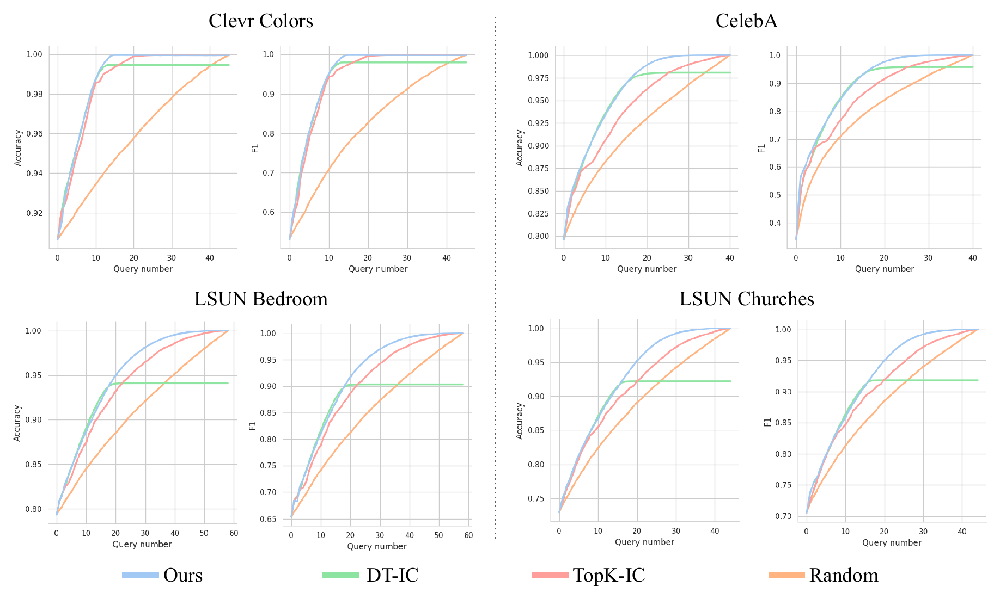
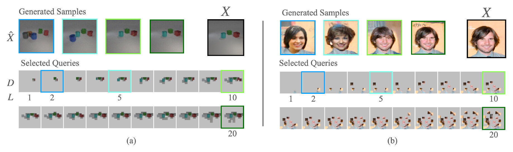

TL;DR: InCoDe describes an image with a short sequence of user-defined questions and their answers, chosen in order of information gain, and generates images from that description, so users control generation by editing answers.

Generative models have been successfully applied in diverse domains, from natural language processing to image synthesis. However, despite this success, a key challenge that remains is the ability to control the semantic content of the scene being generated. We argue that adequate control of the generation process requires a data representation that allows users to access and efficiently manipulate the semantic factors shaping the data distribution. This work advocates for the adoption of succinct, informative, and interpretable representations, quantified using information-theoretic principles. Through extensive experiments, we demonstrate the efficacy of our proposed framework both qualitatively and quantitatively. Our work contributes to the ongoing quest to enhance both controllability and interpretability in the generation process. Code available at github.com/ArmandCom/InCoDe.
Plain textual scene descriptions seem like an intuitive interface for controlling image generation, but the semantic content of an image can be described by many different captions. A bedroom could be described by the objects it contains, its furniture style, its colors, or the relationships among objects: there is no canonical semantic representation. Moreover, constraining a generated image to a rich description that combines numerous concepts remains a challenge for text-to-image models, which struggle with composition in the presence of negations and large conjunctions.
InCoDe instead represents the semantic content of images by sets of predefined, user-oriented and task-specific questions and their answers. Such representations are interpretable, easy for the user to modify, and specialize the generative model to the sub-distribution of interest (e.g. bedroom furniture). This may limit the generality of the model, but it prioritizes combining multiple concepts accurately.

Interpretable compressed descriptions. Given a set of user-defined queries Q (e.g. “Is there a window?”), InCoDe describes an image X by a sequence of query-answer pairs D(X) = [q1(X), …, qL(X)], sorted in decreasing order of the information they provide about the answers to all queries, Q(X). The description is built greedily with Information Pursuit (IP): each new query is the one whose answer has maximum mutual information with Q(X), given the history of query-answers observed so far.
The length L controls the compactness of the representation. Ordering queries by information gain also yields a natural information-theoretic notion of semantic similarity: two images are k-similar if they agree on the first k most informative query-answers.
Three modules. Following Variational IP, InCoDe learns IP directly from data instead of computing mutual information explicitly:

Query-answer conditioning is not typical in the literature, so no large pre-trained diffusion model can be used out of the box. InCoDe fine-tunes a frozen text-to-image model (Stable Diffusion v1-4) with two components: (i) LoRA with rank 32, and (ii) a query embedder, a feature embedding followed by an MLP with a zero-initialized final projection. Each query-answer pair is embedded individually into the dimensionality of a single text token, masked according to whether it is present in the history S, summed to a null-text token, and fed to the UNet through its cross-attention layers.
At the beginning of training the UNet only sees null-text tokens and performs unconditional denoising; as training advances, it learns to use the conditional information in S, which is sampled uniformly at random. At inference, the Querier builds a description of length L, either from a reference image (answers from a VQA model) or by asking the user, and images are sampled with classifier-free guidance.

InCoDe is evaluated on four datasets of increasing complexity. For LSUN Bedroom and LSUN Churches, no existing dataset met the requirements of the task, so the authors built new ones: a large language model assisted in creating the query sets and a VQA model (BLIP) generated the answers. Both datasets are publicly available: attribute-based Bedrooms and attribute-based Churches.
| Dataset (image size) | Query set Q | |Q| |
|---|---|---|
| CLEVR Colors (3 × 64 × 64) | Indicator of presence of N or more objects of a particular color | 45 |
| CelebA (3 × 64 × 64) | Facial attributes | 40 |
| LSUN Bedroom (3 × 512 × 512) | Room descriptor attributes | 58 |
| LSUN Churches (3 × 512 × 512) | Church and surroundings descriptor attributes | 44 |
InCoDe regenerates a reference image by first representing it in the query-answer space, and then edits it by changing the answers to specific queries. On LSUN Bedroom (Figure 1), re-generations use the complete description of L = 58 query-answer pairs, and edits change one or two attributes. In Figure 2, InCoDe generates samples from a sequence of query-answers alone, where text-to-image models fail. Figure 5 shows the same behavior on LSUN Churches.

On CLEVR Colors it is easy to check whether the Querier's choices make sense. It first asks whether there are 4 or more objects (no), then asks about colors one by one, finding gray and green objects, so there are at least 2 objects. At iteration 10 it asks whether there are 3 or more objects and receives a negative answer, which completely captures the semantics of the reference image as defined by the query set. The Generator then synthesizes an image that matches the reference in semantic content.

Concepts that are underrepresented in the training set are still captured through the proposed fine-tuning. When faced with seemingly contradictory answers to different queries, InCoDe synthesizes a creative but implausible solution.

Each query-selection strategy produces a description D, from which an attribute classifier predicts the answers to the complete query set Q(X); accuracy and F1 are measured on a 2k-sample test set. InCoDe is compared with random sampling, a decision tree with information gain by impurity criterion (DT-IC, the gold standard in principle), and TopK-IC, which picks the queries with highest answer entropy in the training set.
InCoDe consistently selects queries that yield a better information acquisition strategy than the baselines, especially in more complex scenarios such as the LSUN datasets. DT-IC fragments the data with every query-answer and eventually runs out of training points over which to compute entropy, so its curves flatten. TopK-IC does not suffer from fragmentation but ignores the history. CLEVR, being simple and highly redundant, favors entropy-based methods and explains the poor performance of the random strategy.

To measure how well generated images respect a conjunction of attributes, BLIP answers the queries on the generated images, and accuracy and F1 are computed against the conditioning answers for the 10 queries with highest entropy. Text-based baselines receive the attribute list as a concatenated prompt (e.g. “Photo of a bedroom that does not have white walls, has a window, …”); only 10 attributes are used because of their 77-token limit. All generative models, including InCoDe, use SD v1-4 as the base model. InCoDe performs significantly better than SD v1-4, on which it is built, and also outperforms the larger SD XL. Structured Diffusion, which targets attribute binding, is hurt by the conjunction of numerous concepts.
| LSUN Bedroom | LSUN Churches | |||
|---|---|---|---|---|
| Acc. | F1 | Acc. | F1 | |
| SD V1 | 0.61 | 0.62 | 0.57 | 0.55 |
| SD XL | 0.58 | 0.64 | 0.59 | 0.61 |
| Structured Diffusion | 0.52 | 0.54 | 0.51 | 0.50 |
| InCoDe | 0.85 | 0.84 | 0.75 | 0.72 |
InCoDe is not restricted to binary queries. In the appendix, the paper studies location-based queries, where a query requests the pixel values of an image patch around a location. Asking all such queries amounts to observing the whole image, and the queries carry spatial structure, so a set of answered patches is parameterized as an image and the Querier uses convolutional blocks. On CLEVR, the Querier first selects a patch in the center of the image and then explores around it as more objects are glimpsed; on CelebA, it selects patches on the main facial features, the clothes and the contour of the head.

InCoDe requires a query set. This is a strength, since the designer is free to select the semantic concepts that matter for the intended generation task, but building the set can be tedious. Large language models can alleviate this, as done for the LSUN Bedroom and Churches query sets, yet human supervision and prompting are still necessary. Designing a framework that lets users define the semantic domain of a query set without directly supervising the query set itself remains an open question.
@inproceedings{comas2025incode,
title = {InCoDe: Interpretable Compressed Descriptions For Image Generation},
author = {Comas, Armand and Chattopadhyay, Aditya and Formosa, Feliu and
Liu, Changyu and Camps, Octavia and Vidal, Ren{\'e}},
booktitle = {International Conference on Learning Representations},
volume = {2025},
pages = {80030--80061},
year = {2025},
url = {https://openreview.net/forum?id=aXwukBD6M6}
}